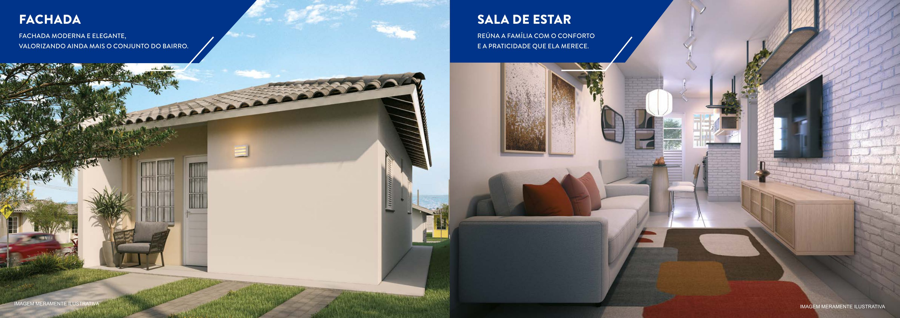
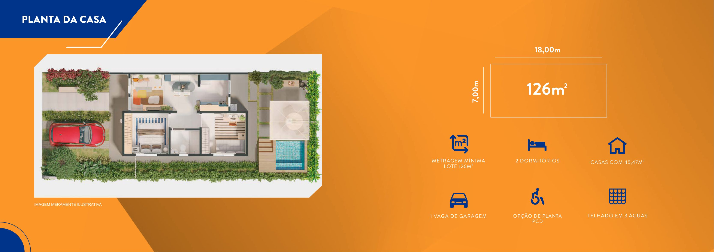
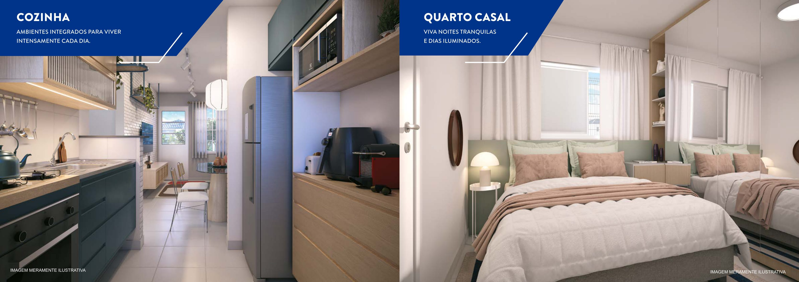
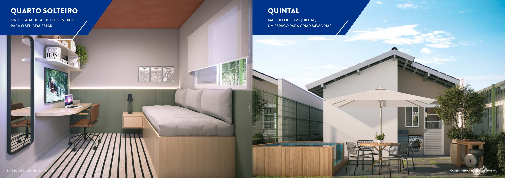
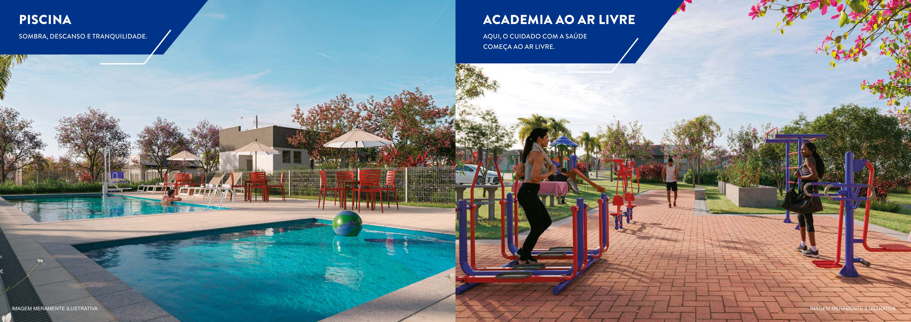
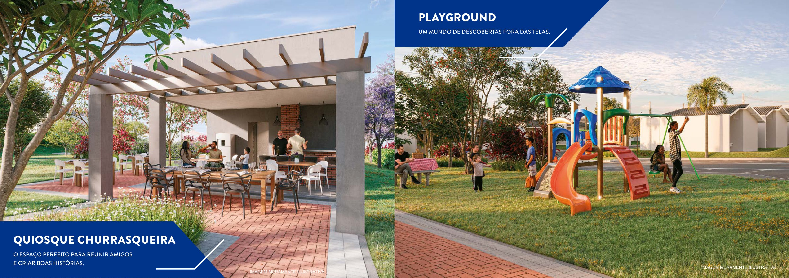
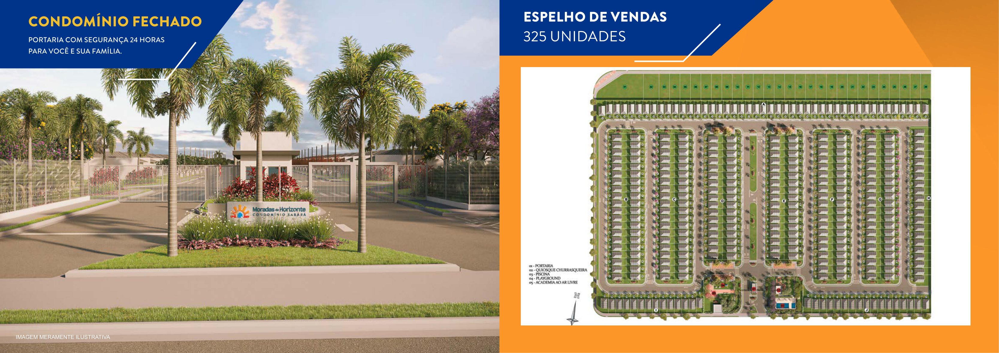

Um novo lugar para chamar de seu.
Conheça o Moradas do Horizonte – Condomínio Sabará: casas térreas em condomínio fechado, com espaços de lazer para a família.
Conversar sobre o empreendimentoDisponibilidade e condições comerciais sob consulta.

Espaço para viver com praticidade
O book apresenta casas térreas não geminadas, com área de serviço coberta, quintal e ambientes integrados. Há opção de planta PCD, sujeita à confirmação de disponibilidade.
Planta, ambientes e lazer
As imagens abaixo reproduzem páginas do book da Pacaembu e são perspectivas ilustrativas, não fotografias de unidades prontas. Projeto e acabamentos devem ser confirmados.






Lazer e localização
Segundo o book, o condomínio terá 325 unidades, portaria com segurança 24 horas, piscina, academia ao ar livre, playground, quiosque com churrasqueira e horta.
O empreendimento é apresentado na zona sul de Uberlândia. O material cita entre as referências da região Uberlândia Shopping, Uniube, Unitri e Parque Una. Distâncias e endereço específico precisam ser confirmados.
Vamos conversar?
Bruno Scapelli · Corretor de imóveis · CRECI 58.771
Telefone e WhatsApp: (34) 9 9878-6607
Fonte: book do corretor da Pacaembu, Condomínio Sabará. Imagens e perspectivas meramente ilustrativas, sujeitas a alterações. Preço, disponibilidade, prazo de entrega, valor de condomínio e condições de compra não foram confirmados. Crédito sujeito à análise da instituição financeira. Confira os documentos e informações atuais antes de tomar uma decisão.
Consultar o book original ↗